Activities and Plans (Actividades y planes)
Describe today's weather (Describe el tema de hoy)
VOCABULARY: Weather expressions (VOCABULARIO: expresiones de clima)
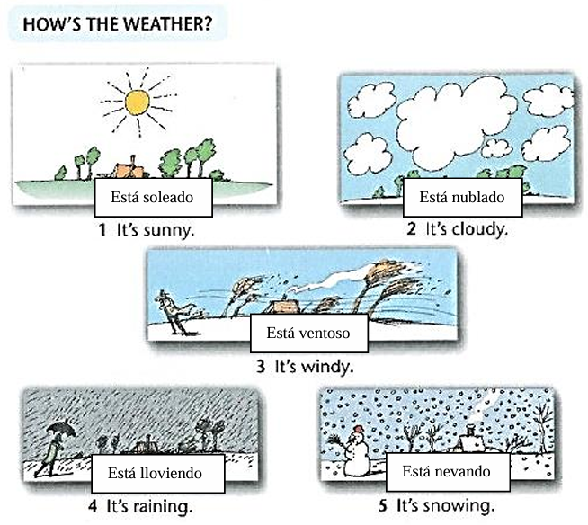
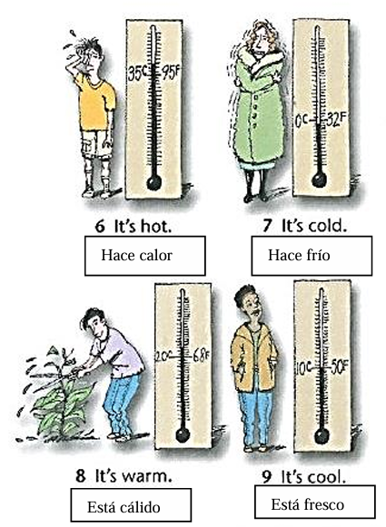
GRAMÁTICA: El presente continuo: enunciados
El presente continuo expresa acciones en progreso ahora. Usa una forma del verbo be y un verbo en presente participio
Afirmativo
- Yo estoy vistiendo un suéter
- Te estás afeitando
- Ella está tomando un baño de tina
- Está lloviendo
- Nosotros estamos viendo televisión
- Se están ejercitando
Negativo
- Yo no estoy vistiendo un chaqueta
- Tu no estás preparando el almuerzo
- Ella no está tomando un ducha
- no está lloviendo
- Nosotros no estamos leyendo
- Ellos no están tomando un siesta
The present continuos expresses actions in progress now. Use a form of be and a presetnt participle.
- Affirmative
- I'm wearing a sweater.
- You're shaving
- She's taking a bath.
- it's raining.
- We're watching TV.
- They're exerciting.
- Negative
- I'm not wearing a jacket
- You're not maging lunch. [OR You aren't making lunch.]
- She's not taking a shower. [OR She isn't taking a shower.]
- It`s not snowing. [OR We aren't reading.]
- We're not reading. [OR We aren't reading.]
- They're not taking a nap. [OR They aren't taking a nap.]
- Present participles
- wear ---- wearing
- study --- studying
- exercise --- exercising
- Some others
- doing, listening, reading,
- working,meeting,getting
GRAMÁTICA: El presente continuo: preguntas de si o no.
- Yes / No question
- ¿Estás comiendo en este momento?
- ¿Está ella tomando el bus?
- ¿Está lloviendo?
- ¿Están ellos caminando?
- Respuesta corta
- Si, estoy comiento / No, no estoy comiendo.
- Si, ella está / No, ella bi está
- Si está / No, no está.
- Si, ellos están caminando / No, ellos no están caminando.
GRAMMAR: The present continuos: yes / no questions
- Are you eating right now?
- Is the taking the bus?
- Is it raining?
- Are they walking?
- Yes, I am. / No, I'm not.
- Yes, she is. / No she's not. [OR No, she isn't]
- Yes, It's. / No is't not. [OR No, it isn't.]
- Yes, they are. / No, they're not. [OR no they aren't.]
PRÁCTICA DE GRAMATICA: Completa cada enunciado, pregunta o respuesta corta con el presente continuo. Usa Contradicciones.
GRAMMAR PRACTICE: Complete each statement, question, or short answer with the present continuos. Use contractions.
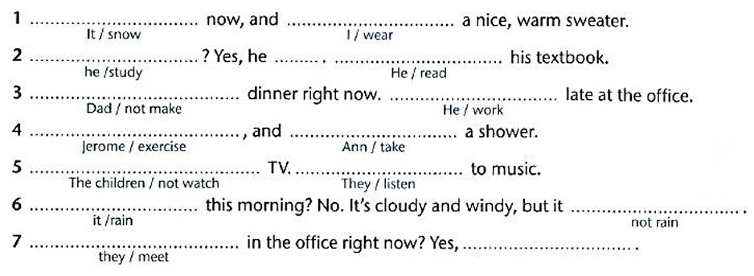
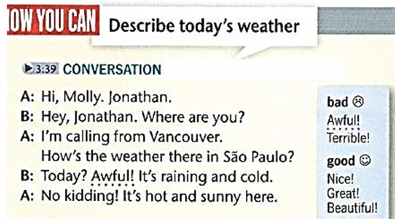
CONVERSATION: Describe el clima de hoy.
- A: Hola Moly, Aquí Jonathan
- B: Hola Jonathan. Where are you?
- A: Estoy llamando de Vancouver. ¿Cómo está el clima ahí en Sao Paulo?
- B: ¿Hoy? ¡Pésimo! Está lloviendo y hace frío.
- A: ¡No bromees! Hace calor y está soleado aquí.
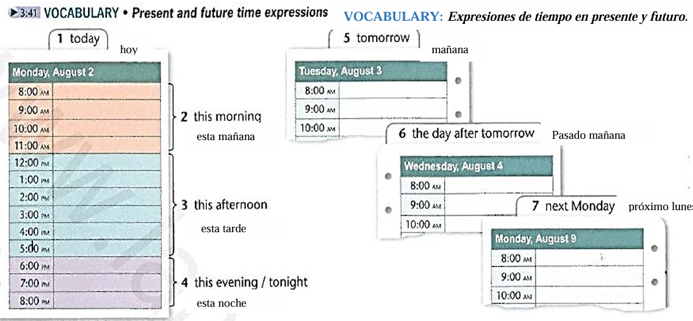
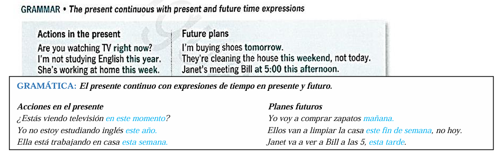
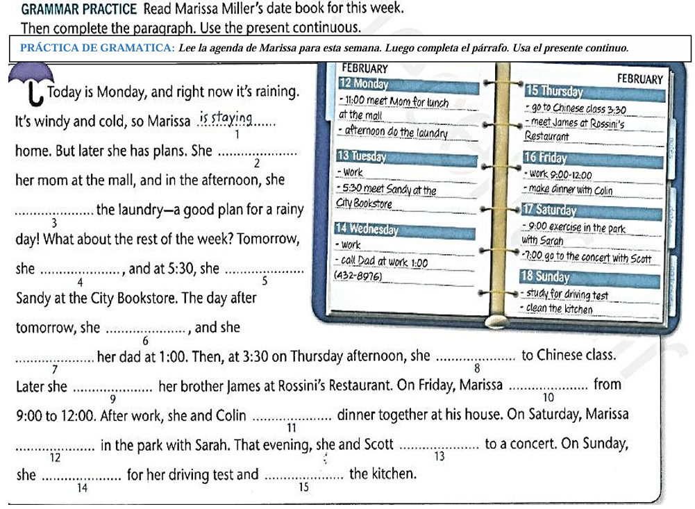
NOW YOU CAN - Discuss plans
- A: What beautiful weather.it's so sunny and warm!
- B: is really is! ... So Kate, are you doing anything special this weekend?
- A: Well, on saturday, i'm meeting Pam in the park.
- B: Do you want to get together on Sunday?
- A: Sure! Call me Sunday morning,OK?
CONVERSACIÓN: Conversar sobre planes
- A: ¡Que hermoso clima! ¡está soleado y cálido!
- B:¡Si, lo es! ... Kate,¿vas hacer algo especial este fin de semana?
- A: Bien, el sábado, voy a ver a Palm en el parque.
- B: ¿Quieres que no veamos el domingo?
- A: ¡Claro! Llámame el domingo, OK.
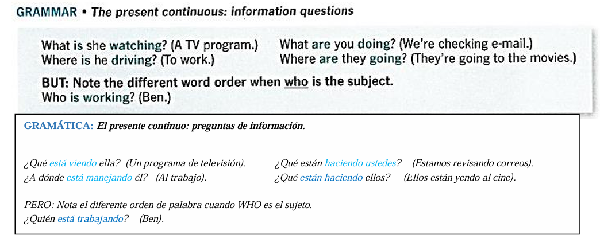
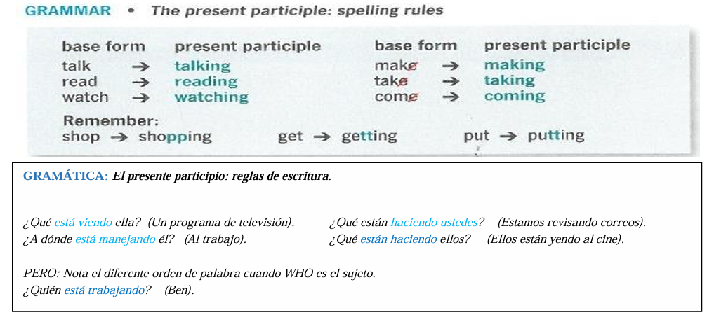
PRÁCTICA DE GRAMÁTICA: Escribe el presente participio de cada forma base.
GRAMMAR PRACTICE: Write the present participle of each base form.
- Check _________________
- Write _________________
- Wash __________________
- go ____________________
- Drive _________________
- Get Up ________________
NOW YOU CAN Ask about people's activities
CONVERSSATION MODEL Read and listen.
- A: Hello?
- B: Hi, Grace. This is Jessica. What are you doing?
- A: Well, actually, I'm doing the laundry right now.
- B: Oh, I'm sorry. Should I call you back later?
- A: Yes, thanks. Talk to you later. Bye.
- B: Bye.
CONVERSACIÓN: Pregunta sobre las actividades de las personas
- A: ¿Hola?
- B: Hola Grace. Aquí Jessica. ¿Qués estás haciendo?
- A: Bien, en realidad, estoy lavando la ropa ahora mismo.
- B: Oh, lo siento. ¿Debería llmarte más tarde.?
- A: Si, gracias. Hablamos más tarde. Adiós.
- B: Adiós.
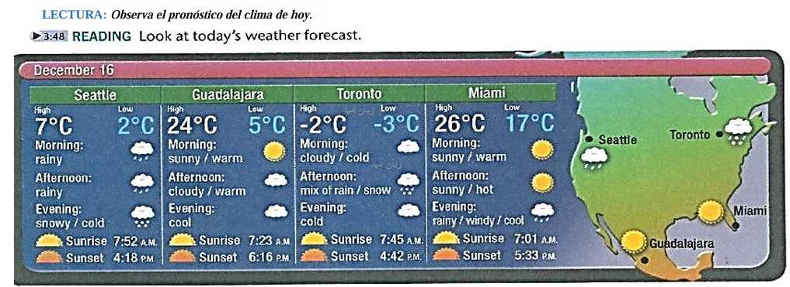
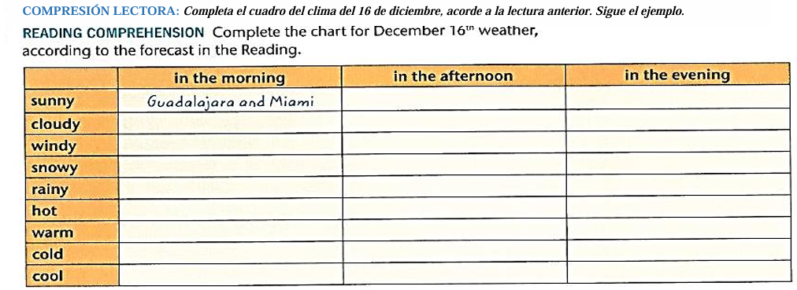